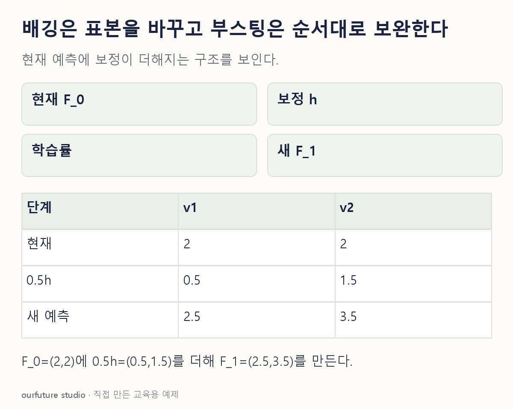

핵심 이론
대표적인 배깅은 훈련 행을 복원추출한 부트스트랩 표본으로 여러 기본 모형을 만든 뒤 예측을 모은다. 같은 행이 한 표본에 여러 번 나오거나 빠질 수 있다. 기본 모형 학습을 이전 모형의 오답에 순서대로 의존시키는 절차가 핵심은 아니다. 복잡한 기본 모형의 변동을 줄이려는 방식으로 이해할 수 있다.
부스팅은 앞 단계의 결과를 이용해 다음 모형을 더한다. 단, 모든 부스팅을 오분류 표본 가중치를 올리는 한 절차로 설명하면 안 된다. 이산 AdaBoost는 표본 가중치를 바꾸는 대표 예이고, 기울기 부스팅은 손실의 음의 기울기를 따라 보정 함수를 적합한다. 제곱오차에서는 이 방향을 잔차로 설명할 수 있다.
기울기 부스팅의 학습률은 새 보정의 기여를 줄이는 축소 계수다. 반복 횟수·기본 모형의 복잡도와 함께 검증해야 한다. 배깅이 항상 부스팅보다 덜 과적합하거나 부스팅이 항상 더 정확하다는 우열은 여기서 나오지 않는다. 아래는 두 관측에 미리 정한 보정값을 더하는 산술 예시다.
작은 예제로 확인하기
제곱오차 회귀의 현재 예측 F₀=(2,2), 실제 y=(3,5), 잔차 보정 h=(1,3)이라고 하자. 학습률은 0.5다.
| 관측 | 현재 예측 | 보정 | 새 예측 |
|---|---|---|---|
| 1 | 2 | 1 | 2.5 |
| 2 | 2 | 3 | 3.5 |
F₁=F₀+0.5h다. 이것은 보정 방향을 보여 주는 예시이며 새 데이터 성능을 측정한 실험은 아니다.
그림으로 확인하기

직접 고르기
기울기 부스팅에서 F₀=(2,2), h=(1,3), 학습률 0.5. F₁=F₀+0.5h.
새 예측 F₁은?
- 1. (1,3)
- 2. (2.5,3.5)
- 3. (3,5)
- 4. (4,4)
정답과 오답의 이유 확인하기
정답 2번 — (2.5,3.5)
현재 예측에 보정의 절반을 더한다. 2+0.5×1=2.5, 2+0.5×3=3.5다.
- 1번: 보정값만 출력하고 기존 예측을 버렸다.
- 3번: 학습률 1로 더한 결과다.
- 4번: 두 관측의 서로 다른 보정을 구분하지 않았다.
조건 하나 바꾸어 풀기
학습률만 1로 바꾸면 F₁은? 이 결과가 일반화 성능을 보장하는가?
풀이: F₁=(3,5). 일반화 성능은 보장하지 않는다.
이 두 훈련 관측에서는 잔차를 모두 보정한다. 보류 자료 오차는 별도로 확인해야 한다.
다시 떠올릴 단서
배깅은 표본의 변화, 부스팅은 앞 단계의 보완.
근거와 적용 조건
- scikit-learn Ensembles — Bagging meta-estimator 및 Gradient Boosting: 복원추출과 단계적 가산 모형. 확인일 2026-10-30.
상황·수치·보기·조건 변경은 자체 교육 예제다. 민간 복원 문항의 공식 정답이나 실제 성능·학습 효과를 뜻하지 않는다.
읽은 내용을 적용해 보기
보정 h는 미리 주어졌다. 새 모형 적합이나 성능 비교가 아니다.